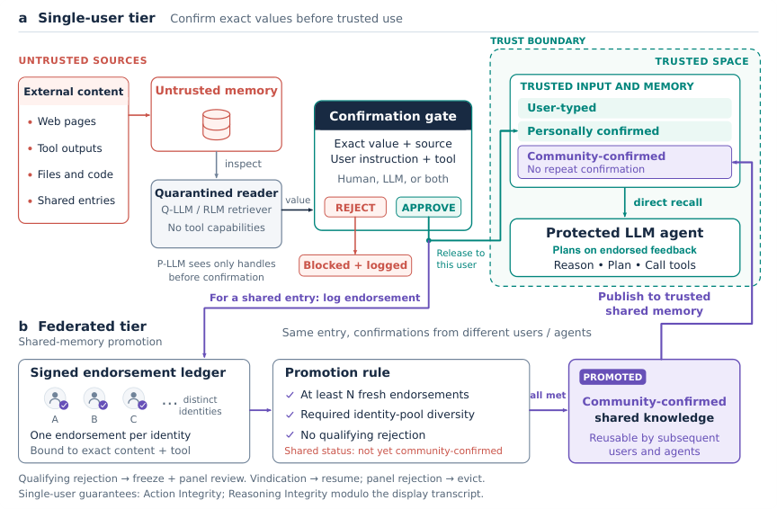
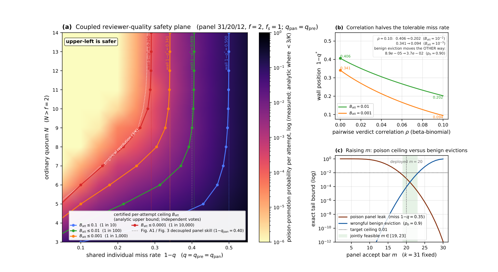

Two integrity theorems (Action Integrity and Reasoning Integrity as noninterference) for the single-user memory interface are machine-checked in Lean 4 with Mathlib.
Abstract
Persistent memory is a largely undefended surface for injection and poisoning, and the same risk limits memory sharing among agents. We present PerMIT, a memory architecture with provable integrity guarantees under an explicit trust assumption: only user-typed inputs and values confirmed at a gate are trusted. PerMIT mediates the release and use of untrusted environment-derived values through a finite memory interface, while preserving agent-driven multi-turn planning and tool choice. Over this finite interface, we prove two integrity theorems that are also machine-checked in Lean 4, which together ensure that environment-derived memory reaches a sensitive action only if confirmed at the gate and influences the agent's behavior only through what the gate displays. Every attack in our threat model thereby reduces to a single auditable decision, which a human, an LLM verifier, or both can make in practice. On Trojan Hippo, PerMIT records zero observed attack success with self-verification and lightweight verifiers. Because each confirmation is a logged verdict on exact content, endorsements accumulate across users, and sufficiently endorsed items become community-confirmed with no further verification required. Under explicit assumptions, we prove and corroborate in simulation a co-scaling property: as the community grows, the risks of promoting poison and of wrongly evicting benign knowledge fall, while per-user verification effort does not rise. On $τ^2$-bench, communities of up to 90 autonomous agents use PerMIT to build shared knowledge bases with no direct memory injection promoted, and the resulting knowledge significantly improves new agents on held-out tasks, suggesting a path toward agents that safely self-improve at test time.
Problem
Persistent memory in LLM agents can be poisoned through environment-derived content such as tool outputs and webpages. This turns one-shot prompt injection into a persistent compromise and makes memory sharing between agents risky. Existing memory defenses give no formal security guarantees.
Approach
PerMIT mediates untrusted environment-derived values through a finite memory interface. Only user-typed inputs and values confirmed at a gate are trusted. Over this interface the authors prove Action Integrity, an authorization property, and Reasoning Integrity, noninterference modulo the display transcript, and machine-check the single-user core in Lean 4 pinned with Mathlib. A federated tier aggregates exact-content endorsements so that items become community-confirmed, with probabilistic bounds on promoting poison and on wrongly evicting benign knowledge.

Figure 1: PerMIT mediates observations and data flows at the persistent-memory interface while leaving planning and tool choice to the protected agent.
Results
PerMIT records zero attack success on Trojan Hippo with oracle, self-verification and lightweight Qwen verifiers, while largely preserving benign utility. On τ²-bench telecom, communities of up to 90 agents promoted none of 12 direct injection payloads. The resulting shared knowledge significantly improved held-out task scores for Claude-Sonnet-4.6 and Kimi-K2.5, but not for GLM-5.

Figure 2: Reviewer quality, not quorum size, sets the federated safety floor (deployed geometry of Section 3.3 , q_{\mathrm{pan}}=q_{\mathrm{pre}}=q ). (a) Certified ceiling B_{\mathrm{att}} of Equation 1 over reviewer miss rate 1-q and quorum N ; the contours are near-vertical because the panel term contains no N . (b) Correlated verdicts (pairwise \rho ) raise both the promotion ceiling and wron
Builder and agent
Pooled PerMIT
Δ vs. A0 [95% CI]
Claude-Sonnet-4.6
0.7856
+0.1363 [+0.0651, +0.2092]
Kimi-K2.5
0.9037
+0.1120 [+0.0339, +0.1979]
GLM-5
0.9635
+0.0052 [-0.0521, +0.0781]
Held-out telecom utility: pooled PerMIT score and effect vs. no-knowledge baseline (95% CI)